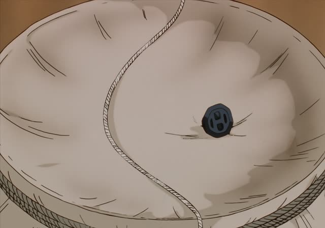
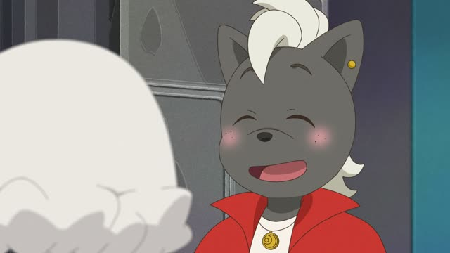

～ほど～ない
Kekkon Dekinai Otoko · Episode 11
あなたほどじゃありません。
"Not as much as you." [a troublesome personality]
AほどBない means "not as B as A". A is what you compare to; ほど goes right after it, and the sentence ends negative: 東京ほど寒くない, "not as cold as Tokyo".
On this card, Kuwano says she has a troublesome personality. She shoots back: not as much as you. The adjective is left out: あなたほど(やっかい)じゃありません. じゃありません makes it polite.
The ending must be negative. AほどBはない flips it into "nothing is as B as A". You'll see it below.

Oishinbo · Episode 20
心配ないよ、この男は海原雄山ほど怖くないから。
"Don't worry, this guy isn't as scary as Kaibara Yuzan."
On this card, the old man calms everyone down about Yamaoka: scary maybe, but not as scary as his father. Yuzan is the measure, and Yamaoka doesn't reach it.
Quick Examples
Comparing this winter to last.
今年は去年ほど寒くないね。
"This year isn't as cold as last year."
CasualSomeone says your Japanese is great.
いえいえ、田中さんほど上手じゃありません。
"Oh no, I'm not as good as you, Tanaka-san."
After a な-adjective: じゃない.
PoliteA friend asks if the test was hard.
思ったほど難しくなかった。
"It wasn't as hard as I thought."
A verb can go before ほど too: 思ったほど = as much as I thought.
CasualTalking about your favorite city.
京都ほどきれいな町はないです。
"There's no town as pretty as Kyoto."
AほどBはない: nothing is as B as A. A big compliment.
PoliteWith and without
東京は寒くない。
"Tokyo isn't cold."
東京は北海道ほど寒くない。
"Tokyo isn't as cold as Hokkaido." It's cold, just less.
Examples from Media
Samurai Champloo · Episode 19
いやホント、宗教ほど金になるものはないですねえ。
"Really, nothing makes money like religion."
AほどBはない: nothing is as B as A.
1 Litre of Tears · Episode 6
文字の乱れは、それほど進行してないみたいですね。
"Her handwriting doesn't seem to have gotten that much worse."
それほど～ない = not that much. A doctor checks Aya's writing.

Odd Taxi · Episode 2
あっ、可愛いって、ルイたんほどじゃないけどね。
"Cute, I mean, not as cute as Rui-tan though."
He quickly takes back half the compliment.
Aggretsuko · Season 2, Episode 9
実は見た目ほどには多くはないんだ。
"There actually aren't as many as it looks."
About people who post hate online. 見た目ほど = as much as it looks.
Howl's Moving Castle
手を貸すほど私は親切じゃないんでね。
"I'm not kind enough to lend you a hand."
Verb + ほど: not kind to the point of helping.
Dungeon Meshi · Episode 21
卵ほど様々な性質を持つ物はないぞ。
"Nothing has as many different properties as eggs."
Senshi loves eggs. AほどBはない again.
Vinland Saga · Episode 19
５０年生きてきて、今日ほど不愉快な日はねえぜ！
"Fifty years alive, and no day's been as rotten as today!"
ねえ is rough casual ない.
Quartet · Episode 4
茶馬子は住所書くほどバカじゃないんで。
"Chamako's not dumb enough to write the address."
Verb + ほど: not dumb to the point of writing it.